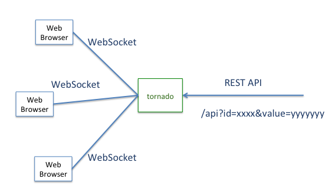

tornado WebSocket example
WebSocket status :
The following table shows values by using WebSocket
| No. | id | value |
| 1 | id 1 | 0 |
| 2 | id 2 | 0 |
| 3 | id 3 | 0 |
| No. | id | value |
| 4 | id 4 | 0 |
| 5 | id 5 | 0 |
| 6 | id 6 | 0 |
| No. | id | value |
| 7 | id 7 | 0 |
| 8 | id 8 | 0 |
| 9 | id 9 | 0 |
REST API examples
- Set the "id 1" value to 100 : curl "http://hiroakis.com:8888/api?id=1&value=100"
- Set the "id 1" value to 300( The row No 1 will change to yellow ) : curl "http://hiroakis.com:8888/api?id=1&value=300"
- Set The "id 1" value to 600( The row No 1 will change to red ): curl "http://hiroakis.com:8888/api?id=1&value=600"
cf) value 201 - 500 : change to yellow, value 501 - : change to red
